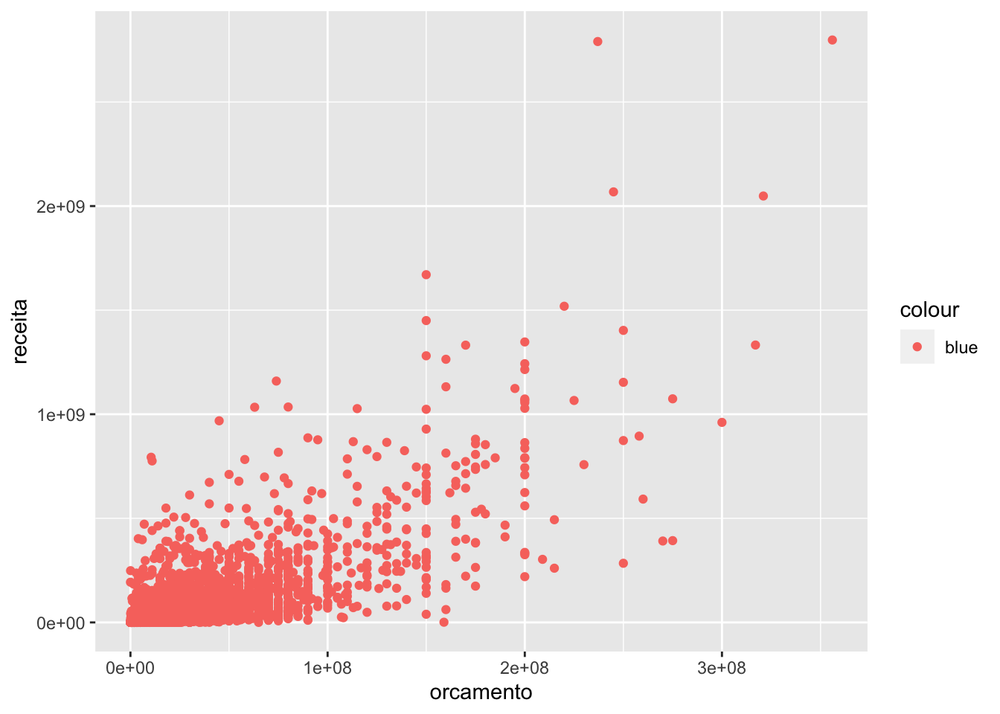
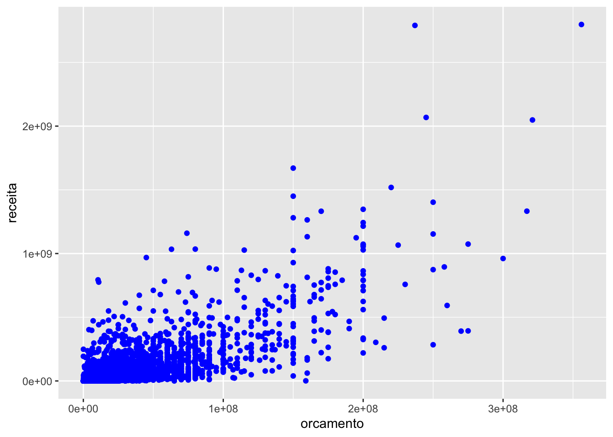
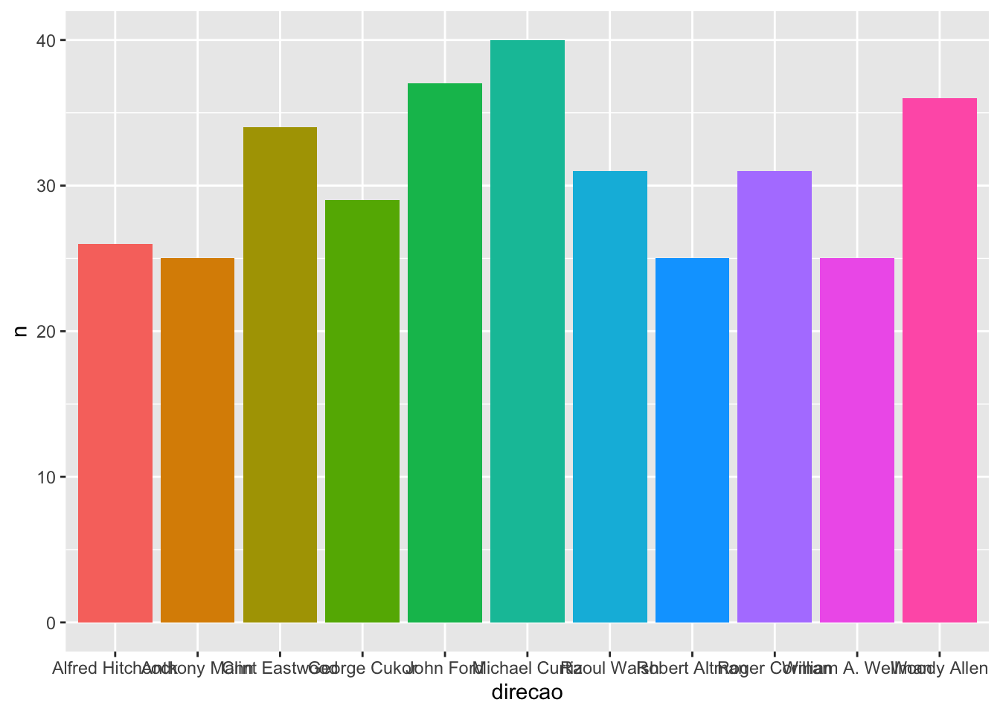
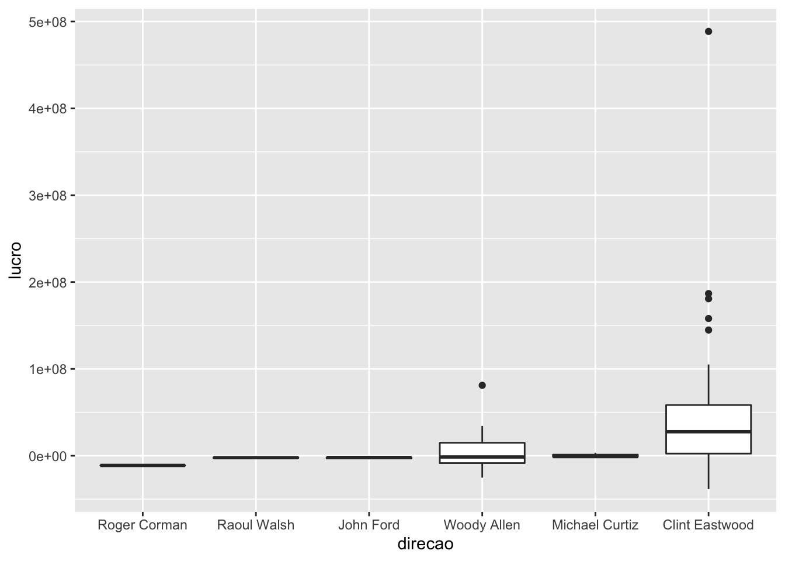
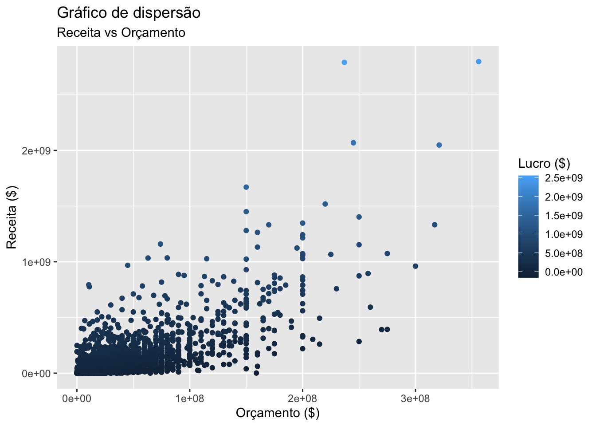
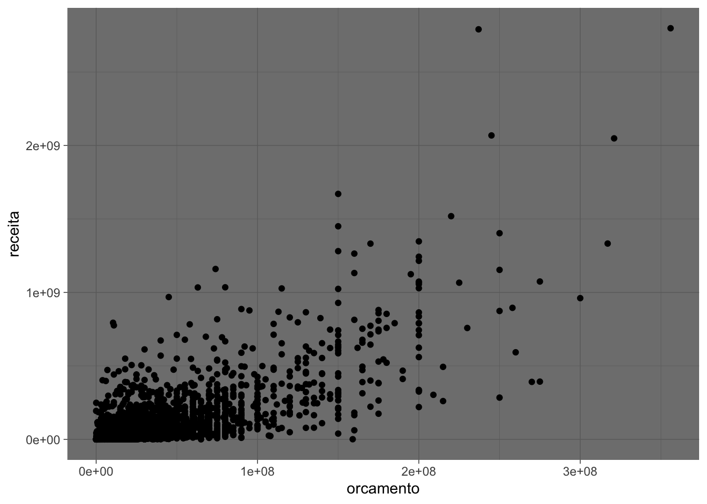
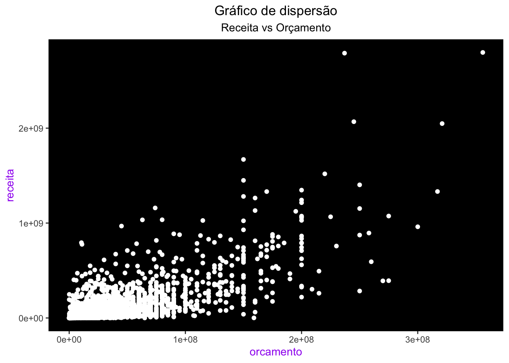
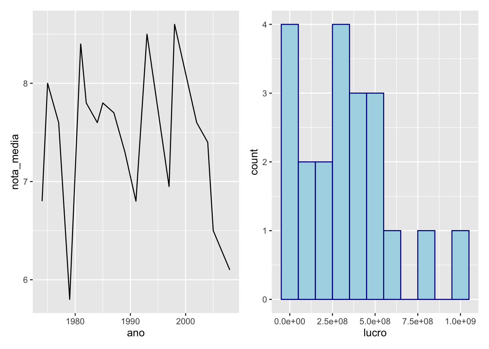

8.1 O pacote ggplot2
A construção de gráficos no R foi revolucionada com a criação do pacote ggplot2, fruto da tese de doutorado do Hadley Wickham. Essa revolução teve base na filosofia que Hadley adotou para responder a pergunta “O que é um gráfico estatístico?”.
Em 2005, o estatístico norte-americano Leland Wilkinson publicou o livro The Grammar of graphics (A gramática dos gráficos, em português), uma fonte de princípios fundamentais para a construção de gráficos estatísticos. No livro, ele defende que um gráfico é o mapeamento dos dados em atributos estéticos (posição, cor, forma, tamanho) de formas geométricas (pontos, linhas, barras, caixas).
A partir dessa definição, Hadley escreveu A Layered Grammar of Graphics (Uma gramática em camada dos gráficos), acrescentando que os elementos de um gráfico (dados, sistema de coordenadas, rótulos, anotações, entre outros) são as suas camadas e que a construção de um gráfico se dá pela sobreposição dessas camadas.
Essa é a essência do ggplot2: construir um gráfico camada por camada.
Além de uma filosofia bem fundamentada, o ggplot2 ainda traz outras vantagens em relação aos gráficos do R base:
- gráficos naturalmente mais bonitos;
- fácil personalização (mais simples deixar o gráfico do jeito que você quer);
- a estrutura padronizada das funções deixa o aprendizado muito mais intuitivo;
- a diferença no código entre tipos diferentes de gráficos é muito pequena.
Para discutir os principais aspectos da construção de gráficos com o ggplot2, vamos continuar utilizando a base de filmes do IMDB. Você pode baixá-la clicando aqui.
Na próxima seção, vamos conhecer as principais funções do ggplot2 e começar a construir nossos primeiros gráficos. Não se esqueça de instalar e carregar o pacote antes de rodar os exemplos.
8.1.1 Gráficos de pontos (dispersão)
No ggplot2, os gráficos são construídos camada por camada, sendo a primeira delas dada pela função ggplot() (repare que não tem o “2”). Essa função recebe um data frame e cria a camada base do gráfico, o nosso canvas, onde acrescentaremos todos os outros elementos (camadas).
Se rodarmos apenas a função ggplot(), obteremos um painel em branco.

Apesar de termos passado os dados para a função, precisamos especificar como as observações serão mapeadas nos aspectos visuais do gráfico e quais formas geométricas serão utilizadas para isso.
O código abaixo constrói um gráfico de dispersão entre as variáveis orçamento e receita.
## Warning: Removed 733 rows containing missing values (geom_point).
Observe que:
- a primeira camada é dada pela função
ggplot()e recebe a nossa baseimdb; - a segunda camada é dada pela função
geom_point(), especificando a forma geométrica utilizada no mapeamento das observações (pontos); - as camadas são unidas com um
+; - o mapeamento na função
geom_point()recebe a funçãoaes(), responsável por descrever como as variáveis serão mapeadas nos aspectos visuais dos pontos (a forma geométrica escolhida); - neste caso, os aspectos visuais mapeados são a posição do ponto no eixo x e a posição do ponto no eixo y;
- o
Warningnos avisa sobre a exclusão das observações que possuemNAna variável receita e/ou orçamento; - todas essas funções são do pacote
{ggplot2}.
A combinação da função ggplot() e de uma ou mais funções geom_() definirá o tipo de gráfico gerado.
O primeiro argumento de qualquer função geom é o mapping. Esse argumento serve para mapear os dados nos atributos estéticos da forma geométrica escolhida. Ele sempre receberá a função aes(), cujos argumentos vão sempre depender da forma geométrica que estamos utilizando. No caso de um gráfico de dispersão, precisamos definir a posição dos pontos nos eixos x e y. No exemplo, a posição do ponto no eixo x foi dada pela coluna orcamento e a posição do ponto no eixo y pela coluna receita.
Atenção! As camadas dos gráficos são empilhadas utilizando-se o sinal
+. Como a estrutura é muito parecida com a do pipe, é comum trocarmos o+por um%>%no meio do código, resultando em erro.
Podemos acrescentar uma terceira camada ao gráfico, desenhando a reta y = x para visualizarmos os filmes não se pagaram.
ggplot(imdb) +
geom_point(mapping = aes(x = orcamento, y = receita)) +
geom_abline(intercept = 0, slope = 1, color = "red")## Warning: Removed 733 rows containing missing values (geom_point).
Os pontos abaixo da reta representam os filmes com orçamento maior que a receita, isto é, aqueles que deram prejuízo.
A reta x = y foi acrescentada ao gráfico pela função geom_abline(). Esse geom pode ser utilizado para desenhar qualquer reta do tipo y = a + b * x, sendo a o intercepto (intercept) da reta e b o seu coeficiente angular (slope).
Neste caso, como não estamos mapeando colunas da base a essa reta (isto é, essa reta não depende dos dados), não precisamos utilizar o argumento mapping da função geom_abline(), tampouco a função aes().
Para ver como um ggplot realmente é construído por camadas, veja o que acontece quando colocamos a camada da reta antes da camada dos pontos:
ggplot(imdb) +
geom_abline(intercept = 0, slope = 1, color = "red") +
geom_point(mapping = aes(x = orcamento, y = receita)) ## Warning: Removed 733 rows containing missing values (geom_point).
Além da posição nos eixos x e y, podemos mapear a cor dos pontos a uma variável.
library(dplyr, warn.conflicts = FALSE)
imdb %>%
mutate(lucro = receita - orcamento) %>%
ggplot() +
geom_point(aes(x = orcamento, y = receita, color = lucro))## Warning: Removed 733 rows containing missing values (geom_point).
O gráfico acima tem a cor dos pontos definida pelo valor da variável lucro. Como a coluna lucro é numérica, um degradê é criado para a cor dos pontos. O azul é a cor padrão nesses casos (veremos mais adiante como escolher a cor).
Veja que criamos a coluna lucro utilizando a função mutate() antes de iniciarmos a construção do gráfico. O fluxo base %>% manipulação %>% ggplot é muito comum no dia-a-dia.
Lembre-se: por trás de um grande gráfico sempre existe uma grande tabela.
Poderíamos também classificar os filmes entre aqueles que lucraram ou não. Neste caso, como a coluna lucrou é textual, uma cor é atribuída a cada categoria.
imdb %>%
mutate(
lucro = receita - orcamento,
lucro = ifelse(lucro <= 0, "Não", "Sim")
) %>%
filter(!is.na(lucro)) %>%
ggplot() +
geom_point(mapping = aes(x = orcamento, y = receita, color = lucro))
Um erro comum na hora de definir atributos estéticos de um gráfico é definir valores para atributos estéticos dentro da função aes(). Repare o que acontece quando tentamos definir diretamente a cor dos pontos dentro dessa função.
## Warning: Removed 733 rows containing missing values (geom_point).
Estranho, não? O que aconteceu foi o seguinte: a função aes() espera uma coluna para ser mapeada a cada atributo, então o valor blue é tratado como uma nova variável/coluna que tem essa string para todas as observações. Assim, todos pontos têm a mesma cor (vermelha, padrão do ggplot) pois pertencem todos à essa “categoria blue”.
No caso, o que gostaríamos é de ter pintado todos os pontos de azul. A forma certa de fazer isso é colocando o atributo color= fora da função aes():
## Warning: Removed 733 rows containing missing values (geom_point).
8.1.2 Gráficos de linhas
Utilizamos o geom_line para fazer gráficos de linhas. Assim como nos gráficos de pontos, precisamos definir as posições x e y. O gráfico abaixo representa a evolução da nota média dos filmes ao longo dos anos.
imdb %>%
group_by(ano) %>%
summarise(nota_media = mean(nota_imdb, na.rm = TRUE)) %>%
ggplot() +
geom_line(aes(x = ano, y = nota_media))## `summarise()` ungrouping output (override with `.groups` argument)## Warning: Removed 1 row(s) containing missing values (geom_path).
Gráficos de linha são muito utilizados para representar séries temporais, isto é, observações medidas repetidamente em intervalos equidistantes12 de tempo. O gráfico anterior apresenta a série da nota IMDB média ao longo dos anos.
Podemos colocar pontos e retas no mesmo gráfico. Basta acrescentar os dois geoms. O gráfico abaixo mostra a nota média anual dos filmes do Robert De Niro.
imdb %>%
filter(ator_1 == "Robert De Niro") %>%
group_by(ano) %>%
summarise(nota_media = mean(nota_imdb, na.rm = TRUE)) %>%
ggplot() +
geom_line(aes(x = ano, y = nota_media)) +
geom_point(aes(x = ano, y = nota_media))## `summarise()` ungrouping output (override with `.groups` argument)
Quando precisamos usar o mesmo aes() em vários geoms, podemos defini-lo dentro da função ggplot(). Esse aes() será então distribuído para todo geom do gráfico. O código anterior pode ser reescrito da seguinte forma.
imdb %>%
filter(ator_1 == "Robert De Niro") %>%
group_by(ano) %>%
summarise(nota_media = mean(nota_imdb, na.rm = TRUE)) %>%
ggplot(aes(x = ano, y = nota_media)) +
geom_line() +
geom_point()## `summarise()` ungrouping output (override with `.groups` argument)
Se algum geom necessitar de um atributo que os outros não precisam, esse atributo pode ser especificado normalmente dentro dele. Abaixo, utilizamos o geom_label para colocar as notas médias no gráfico. Além do x e y, o geom_label também precisa do texto que será escrito no gráfico.
imdb %>%
filter(ator_1 == "Robert De Niro") %>%
group_by(ano) %>%
summarise(nota_media = mean(nota_imdb, na.rm = TRUE)) %>%
mutate(nota_media = round(nota_media, 1)) %>%
ggplot(aes(x = ano, y = nota_media)) +
geom_line() +
geom_label(aes(label = nota_media))## `summarise()` ungrouping output (override with `.groups` argument)
8.1.3 Gráficos de barras
Para construir gráficos de barras, utilizamos o geom_col. A seguir, construímos um gráfico de barras do número de filmes dos 10 diretores que mais aparecem na nossa base do IMDB.

Gráficos de barras também precisam dos atributos x e y, sendo que o atributo y representará a altura de cada barra.
No gráfico anterior, vemos que o NA é considerado uma “categoria” de diretor e entra no gráfico. Podemos retirar os NAs dessa coluna previamente utilizando a função filter().
A seguir, além de retirar os NAs, atribuímos a coluna diretor à cor das colunas. Repare que, nesse caso, não utilizamos o atributo color e sim fill. A regra é a seguinte: o atributo color colore objetos sem área (pontos, linhas, contornos), o atributo fill preenche objetos com cor (barras, áreas, polígonos em geral).
imdb %>%
count(diretor) %>%
filter(!is.na(diretor)) %>%
top_n(10, n) %>%
ggplot() +
geom_col(
aes(x = diretor, y = n, fill = diretor),
show.legend = FALSE
)
Para consertar as labels do eixo x, a melhor prática é invertermos os eixos do gráfico, construindo barras horizontais.
imdb %>%
count(diretor) %>%
filter(!is.na(diretor)) %>%
top_n(10, n) %>%
ggplot() +
geom_col(
aes(y = diretor, x = n, fill = diretor),
show.legend = FALSE
)
Para ordenar as colunas, precisamos mudar a ordem dos níveis do fator diretor. Para isso, utilizamos a função fct_reorder() do pacote forcats. A nova ordem será estabelecida pela coluna n (quantidade de filmes).
Fatores dentro do R são números inteiros (1, 2, 3, …) que possuem uma representação textual (Ver Seção 7.5). Variáveis categóricas são transformadas em fatores pelo ggplot pois todo eixo cartesiano é numérico. Assim, os textos de uma variável categórica são, internamente, números inteiros.
Por padrão, os inteiros são atribuídos a cada categoria de uma variável pela ordem alfabética (repare na ordem dos diretores nos gráficos anteriores). Assim, se transformássemos o vetor c("banana", "uva", "melancia") em um fator, a atribuição de inteiros seria: “banana” vira 1, “melancia” vira 2 e “uva” vira 3. Embora sejam inteiros internamente, sempre que chamássemos esse novo vetor, ainda sim veríamos os textos “banana”, “uva” e “melancia”.
imdb %>%
count(diretor) %>%
filter(!is.na(diretor)) %>%
top_n(10, n) %>%
mutate(diretor = forcats::fct_reorder(diretor, n)) %>%
ggplot() +
geom_col(
aes(y = diretor, x = n, fill = diretor),
show.legend = FALSE
) 
Por fim, podemos colocar uma label com o número de filmes de cada diretor dentro de cada barra.
imdb %>%
count(diretor) %>%
filter(!is.na(diretor)) %>%
top_n(10, n) %>%
mutate(diretor = forcats::fct_reorder(diretor, n)) %>%
ggplot() +
geom_col(aes(x = diretor, y = n, fill = diretor), show.legend = FALSE) +
geom_label(aes(x = diretor, y = n/2, label = n)) +
coord_flip()
8.1.4 Histogramas e boxplots
Para construir histogramas, usamos o geom_histogram. Esse geom só precisa do atributo x (o eixo y é construído automaticamente). Histogramas são úteis para avaliarmos a distribuição de uma variável.
A seguir, construímos o histograma do lucro dos filmes do diretor Steven Spielberg. O primeiro warning nos diz que o eixo x foi dividido em 30 intervalos para a construção do histograma.
imdb %>%
filter(diretor == "Steven Spielberg") %>%
mutate(lucro = receita - orcamento) %>%
ggplot() +
geom_histogram(aes(x = lucro))## `stat_bin()` using `bins = 30`. Pick better value with `binwidth`.## Warning: Removed 1 rows containing non-finite values (stat_bin).
Para definir o tamanho de cada intervalo, podemos utilizar o argumento bindwidth.
imdb %>%
filter(diretor == "Steven Spielberg") %>%
mutate(lucro = receita - orcamento) %>%
ggplot() +
geom_histogram(
aes(x = lucro),
binwidth = 100000000,
color = "white"
)## Warning: Removed 1 rows containing non-finite values (stat_bin).
Boxplots também são úteis para estudarmos a distribuição de uma variável, principalmente quando queremos comparar várias distribuições.
Para construir um boxplot no ggplot, utilizamos a função geom_boxplot. Ele precisa dos atributos x e y, sendo que ao atributo x devemos mapear uma variável categórica.
A seguir, construímos boxplots do lucro dos filmes dos diretores que fizeram mais de 15 filmes.
imdb %>%
filter(!is.na(diretor)) %>%
group_by(diretor) %>%
filter(n() >= 15) %>%
mutate(lucro = receita - orcamento) %>%
ggplot() +
geom_boxplot(aes(x = diretor, y = lucro))## Warning: Removed 10 rows containing non-finite values (stat_boxplot).
Também podemos reordenar a ordem dos boxplots utilizando a função forcats::fct_reorder. Neste caso, os diretores são ordenados pela mediana do lucro13.
imdb %>%
filter(!is.na(diretor)) %>%
group_by(diretor) %>%
filter(n() >= 15) %>%
ungroup() %>%
mutate(
lucro = receita - orcamento,
diretor = forcats::fct_reorder(diretor, lucro, na.rm = TRUE)
) %>%
ggplot() +
geom_boxplot(aes(x = diretor, y = lucro))## Warning: Removed 10 rows containing non-finite values (stat_boxplot).
8.1.5 Títulos e labels
Os títulos e labels do gráfico também são considerados camadas e são criados ou modificados pela função labs(). O exemplo a seguir coloca um título e um subtítulo no gráfico, além de modificar os labels do eixo x e y e da legenda.
imdb %>%
mutate(lucro = receita - orcamento) %>%
ggplot() +
geom_point(mapping = aes(x = orcamento, y = receita, color = lucro)) +
labs(
x = "Orçamento ($)",
y = "Receita ($)",
color = "Lucro ($)",
title = "Gráfico de dispersão",
subtitle = "Receita vs Orçamento"
)## Warning: Removed 733 rows containing missing values (geom_point).
8.1.6 Escalas
O pacote {ggplot2} possui uma família de funções scale_ para modificarmos propriedades referentes às escalas do gráfico. Como podemos ter escalas de números, categorias, cores, datas, entre outras, temos uma função específica para cada tipo de escala.
Considere o gráfico a seguir.
imdb %>%
group_by(ano) %>%
summarise(nota_media = mean(nota_imdb, na.rm = TRUE)) %>%
ggplot() +
geom_line(aes(x = ano, y = nota_media))## `summarise()` ungrouping output (override with `.groups` argument)## Warning: Removed 1 row(s) containing missing values (geom_path).
Vamos redefinir as quebras dos eixos x e y.
imdb %>%
group_by(ano) %>%
summarise(nota_media = mean(nota_imdb, na.rm = TRUE)) %>%
ggplot() +
geom_line(aes(x = ano, y = nota_media)) +
scale_x_continuous(breaks = seq(1916, 2016, 10)) +
scale_y_continuous(breaks = seq(0, 10, 2))## `summarise()` ungrouping output (override with `.groups` argument)## Warning: Removed 1 row(s) containing missing values (geom_path).
Como as escalas dos eixos x e y são numéricas, utilizamos nesse caso as funções scale_x_continuous() e scale_y_continuous(). Veja que, mesmo definindo as quebras entre 0 e 10, o limite do eixo y não é alterado. Para alterá-lo, usamos a função coord_cartesian().
imdb %>%
group_by(ano) %>%
summarise(nota_media = mean(nota_imdb, na.rm = TRUE)) %>%
ggplot() +
geom_line(aes(x = ano, y = nota_media)) +
scale_x_continuous(breaks = seq(1916, 2016, 10)) +
scale_y_continuous(breaks = seq(0, 10, 2)) +
coord_cartesian(ylim = c(0, 10))## `summarise()` ungrouping output (override with `.groups` argument)## Warning: Removed 1 row(s) containing missing values (geom_path).
Para mudarmos as escalas de cores, usamos as funções do tipo: scale_color_ e scale_fill_.
Para escolher manualmente as cores de um gráfico, utilize as funções
scale_color_manual() e scale_fill_manual(). A seguir substituímos as cores padrão do gráfico por um outro conjunto de cores.
imdb %>%
count(diretor) %>%
filter(!is.na(diretor)) %>%
top_n(5, n) %>%
ggplot() +
geom_col(
aes(x = diretor, y = n, fill = diretor),
show.legend = FALSE
) +
coord_flip() +
scale_fill_manual(values = c("red", "blue", "green", "pink", "purple", "black"))
Também podemos usar códigos hexadecimais.
imdb %>%
count(diretor) %>%
filter(!is.na(diretor)) %>%
top_n(5, n) %>%
ggplot() +
geom_col(
aes(x = diretor, y = n, fill = diretor),
show.legend = FALSE
) +
coord_flip() +
scale_fill_manual(
values = c("#ff4500", "#268b07", "#ff7400", "#0befff", "#a4bdba", "#b1f91a")
)
Para trocar as cores de um gradiente, utilize as funções scale_color_gradient() e scale_fill_gradient().
imdb %>%
mutate(lucro = receita - orcamento) %>%
ggplot() +
geom_point(aes(x = orcamento, y = receita, color = lucro)) +
scale_color_gradient(low = "red", high = "green")## Warning: Removed 733 rows containing missing values (geom_point).
Para trocar o nome das categorias de uma legenda de cores, utilize as funções scale_color_discrete() e scale_fill_discrete().
imdb %>%
filter(!is.na(cor)) %>%
group_by(ano, cor) %>%
summarise(num_filmes = n()) %>%
ggplot() +
geom_line(aes(x = ano, y = num_filmes, color = cor)) +
scale_color_discrete(labels = c("Preto e branco", "Colorido"))## `summarise()` regrouping output by 'ano' (override with `.groups` argument)## Warning: Removed 2 row(s) containing missing values (geom_path).8.1.7 Temas
Os gráficos que vimos até agora usam o tema padrão do ggplot2. Existem outros temas prontos para utilizarmos presentes na família de funções theme_.
theme_minimal()
## Warning: Removed 733 rows containing missing values (geom_point).theme_bw()
## Warning: Removed 733 rows containing missing values (geom_point).theme_classic()
## Warning: Removed 733 rows containing missing values (geom_point).
theme_dark()
## Warning: Removed 733 rows containing missing values (geom_point).
Você também pode criar o seu próprio tema utilizando a função theme(). Nesse caso, para trocar os elementos estéticos do gráfico precisamos usar as funções element_text() para textos, element_line() para linhas, element_rect() para áreas e element_blank() para remover elementos.
No exemplo a seguir, fizemos as seguintes modificações no tema padrão:
- Alinhamos o título no centro do gráfico.
- Alinhamos o subtítulo no centro do gráfico.
- Pintamos o título dos eixos de roxo.
- Preenchemos o fundo do gráfico de preto.
- Removemos o grid do gráfico.
imdb %>%
ggplot() +
geom_point(mapping = aes(x = orcamento, y = receita), color = "white") +
labs(title = "Gráfico de dispersão", subtitle = "Receita vs Orçamento") +
theme(
plot.title = element_text(hjust = 0.5),
plot.subtitle = element_text(hjust = 0.5),
axis.title = element_text(color = "purple"),
panel.background = element_rect(fill = "black"),
panel.grid = element_blank()
)## Warning: Removed 733 rows containing missing values (geom_point).
8.1.8 Juntando gráficos
No ggplot, temos várias formas de juntar gráficos. Vamos apresentar a seguir as principais.
Vários geoms no mesmo gráfico
Como vimos anteriormente, podemos acrescentar vários geoms em um mesmo gráfico, apenas adicionando novas camadas. No código a seguir, construímos o gráfico de dispersão da receita pelo orçamento dos filmes, acrescentando também uma reta de tendência linear aos pontos.
ggplot(imdb, aes(x = orcamento, y = receita)) +
geom_point() +
geom_smooth(se = FALSE, method = "lm")## `geom_smooth()` using formula 'y ~ x'## Warning: Removed 733 rows containing non-finite values (stat_smooth).## Warning: Removed 733 rows containing missing values (geom_point).Replicando um gráfico para cada categoria de uma variável
Uma funcionalidade muito útil do ggplot2 é a possibilidade de usar facets para replicar um gráfico para cada categoria de uma variável.
imdb %>%
filter(classificacao %in% c("Livre", "A partir de 13 anos")) %>%
ggplot() +
geom_point(aes(x = orcamento, y = nota_imdb)) +
facet_wrap(~classificacao, nrow = 2)## Warning: Removed 85 rows containing missing values (geom_point).Repare que usamos uma fórmula para dizer à função qual variável vamos utilizar para quebrar o gráfico. Podemos especificar se queremos os gráficos lado a lado ou um embaixo do outro pelos argumentos nrow= e ncol=.
imdb %>%
filter(classificacao %in% c("Livre", "A partir de 13 anos")) %>%
ggplot() +
geom_point(aes(x = orcamento, y = nota_imdb)) +
facet_wrap(~classificacao, ncol = 2)## Warning: Removed 85 rows containing missing values (geom_point).Juntando gráficos diferentes
Diversos outros pacotes trazem ferramentas super úteis para trabalharmos com o ggplot2. Um deles é o pacote {patchwork}. Após carregá-lo, podemos juntar dois gráficos em uma mesma figura com um simples +.
# Instale antes de carregar
# install.packages("patchwork")
library(patchwork)
p1 <- imdb %>%
filter(diretor == "Steven Spielberg") %>%
group_by(ano) %>%
summarise(nota_media = mean(nota_imdb, na.rm = TRUE)) %>%
ggplot() +
geom_line(aes(x = ano, y = nota_media))## `summarise()` ungrouping output (override with `.groups` argument)p2 <- imdb %>%
mutate(lucro = receita - orcamento) %>%
filter(diretor == "Steven Spielberg") %>%
ggplot() +
geom_histogram(
aes(x = lucro),
fill = "lightblue",
color = "darkblue",
binwidth = 100000000
)
p1 + p2## Warning: Removed 1 rows containing non-finite values (stat_bin).
8.1.9 Exercícios
1. O que acontece quando rodamos o código ggplot(data = mtcars)?
2. O que tem de errado no código abaixo? Por que os pontos não ficaram azuis?

3. Mapeie uma variável contínua para a cor, o tamanho e a forma de um gráfico de pontos. Como esses atributos estéticos se comportam diferente para variáveis categóricas vs contínuas?
4. Utilizando o mtcars, faça um gráfico de dispersão de mpg por qsec.
5. Utilizando o mtcars, o que acontece se você fizer um gráfico de dispersão de vs por mpg? Por que o gráfico não é útil?
Para resolver os exercícios a seguir, utilize a base imdb.
6. Crie um gráfico de dispersão da nota do imdb pelo orçamento.
7. Faça um gráfico de linhas do orçamento médio dos filmes ao longo dos anos.
8. Transforme o gráfico do exercício anterior em um gráfico de barras.
9. Descubra quais são os 5 atores que mais aparecem na coluna ator_1 e faça um boxplot do lucro dos filmes desses atores.
10. Com base no código abaixo, resolva os itens a seguir.
diretores <- c(
"Steven Spielberg",
"Quentin Tarantino",
"Christopher Nolan",
"Martin Scorsese"
)
imdb %>%
filter(diretor %in% diretores) %>%
group_by(ano, diretor) %>%
summarise(nota_media = mean(nota_imdb, na.rm = TRUE)) %>%
ggplot(aes(x = ano, y = nota_media)) +
geom_point() +
geom_line() +
facet_wrap(vars(diretor))## `summarise()` regrouping output by 'ano' (override with `.groups` argument)
a. Analisando o gráfico gerado, descreva o que a função
facet_wrap()faz..b Utilize os argumentos nrow e
ncolda funçãofacet_wrap()para colocar os quatro gráficos em uma única coluna.
11. Resovla os itens a seguir para fazer um gráfico de barras da frequência de filmes com nota maior que 8 ao longo dos anos.
a. Crie uma nova coluna na base IMDB indicando se a nota de um filme é maior que 8 ou não.
b. b. Utilizando a coluna criada em (a) crie uma tabela com o número anual de filmes com nota maior 8.
c. Utilize a tabela criada em (b) para fazer um gráfico de barras do número de filmes com nota maior que 8 ao longo dos anos.